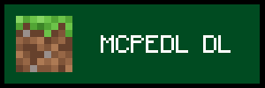

MCPEDL Content Archive
MCPEDL hosts some of the earliest passion projects I had created as a young teenager.
The content posted included maps and addons, marking the first time I had started messing around with JSON. The archive includes many addons and maps that were published during the time the account was active between 2019-2021, including some content that had never been released to the public.
This archive unfortunately has missing files that can no longer be accessed anywhere on the internet and are now considered lost.
The original pages for Parkour+ and SKPVP have been taken off of MCPEDL's site for unknown reasons and can no longer be accessed, and the original download links for old versions of Parkour+ and SKPVP had been deleted years ago due to young me assuming I'd always have access to my files.
As a result, I no longer have access to the following files:
Parkour+ 1.0.0, Parkour+ 1.0.1, SKPVP 1.0.0, SKPVP 1.0.1
Other lost files include 2 completely unreleased maps: A zombie survival map (made to celebrate the 1st birthday of the account) and a cryptic puzzle map called Con-fusion, the archive contains the only surviving footage of an early iteration of Con-fusion.
The unreleased maps will unfortunately forever remain lost to time (except for Con-fusion as it is partly found). The Con-fusion map became lost after my install of MCW10 was corrupted due to self-negligence and the unnamed zombie map became lost due to unknown reasons. The other maps may still have a chance of being found, however, if anyone can come forward with a copy of these lost versions of the maps.
Included in the archive are other files previously unreleased to the public, which includes a personal resource pack, a recreation of an old world and an unfinished addon that was supposed to release called "Everything is cake" (inspired by the cake or fake trend and an old video by Phoenix SC) but was denied by the MCPEDL admin due to guidelines requiring me to get permission from Phoenix.
If you're interested in checking out my old MCPEDL content, a download link is provided, but please keep in mind that they were created in old versions of minecraft and may not be compatible anymore. The maps could be converted to work in newer versions of Bedrock edition, however the addons may not work properly and should that happen, a version of the game from pre 1.16.100 must be downloaded as that was an update that A. Overhauled addons and B. The addons were made and released before this overhaul.
The file is archived in the 7-Zip format to save space for hosting (or to make downloading the file more efficient as 7-zip has more compression than the .zip and .rar format), to unarchive it, download 7-zip at 7-zip.org.
